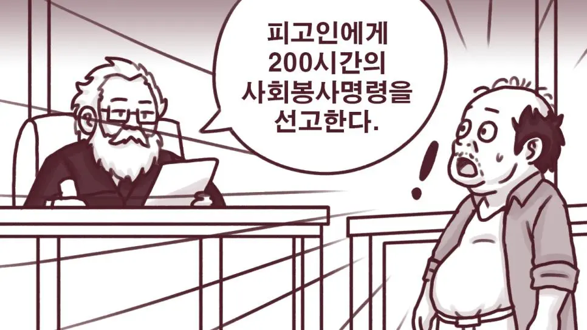
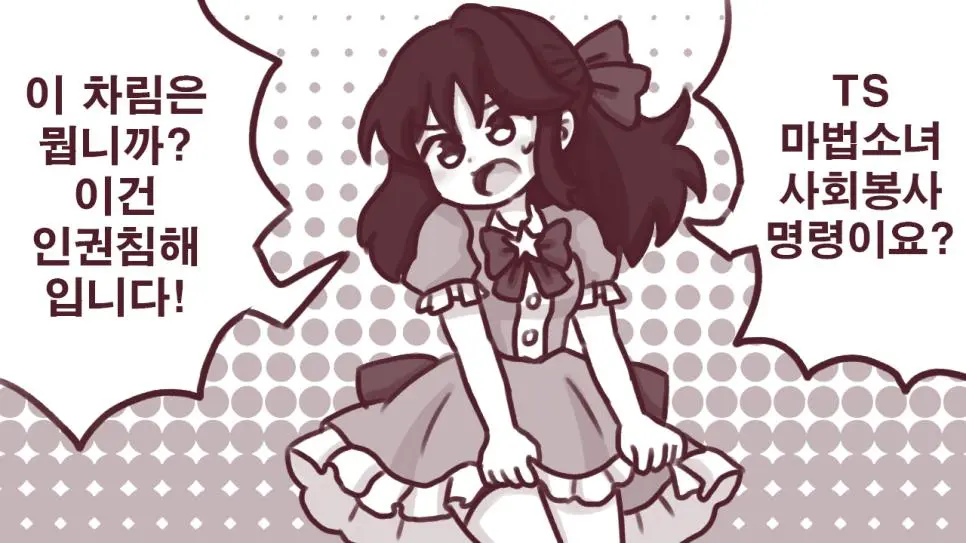
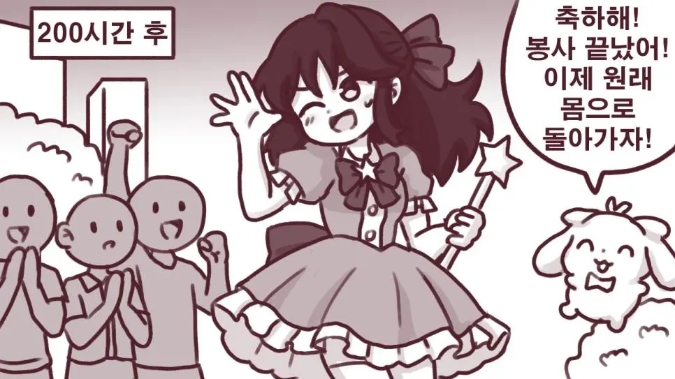
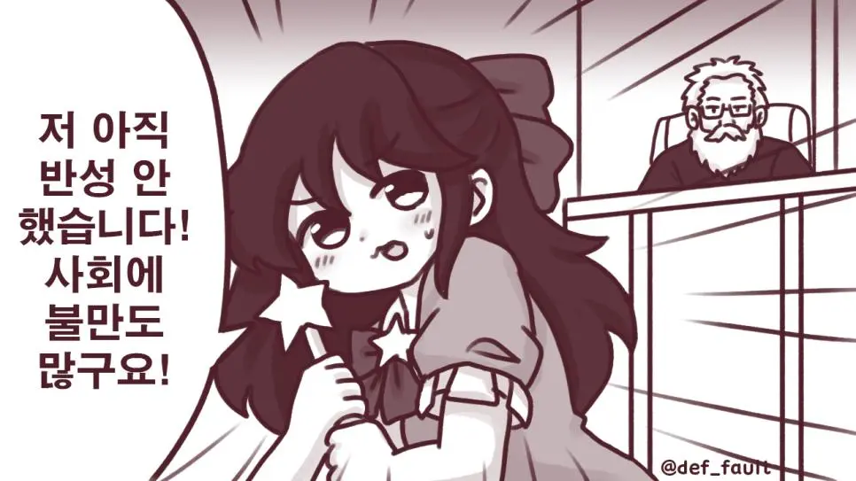

??




??
주적제거

북진통일의 선봉장?
TS는 가지가아니야 씨팔!!!
달려있음 내가봄
그러면 가지가 맞다
그럼 TS가 아니지
근데 본문에 TS라고 써있으므로 가지가 아님
첫컷이 여자일수도 있지
그럼 TS됐을 때 마법"소녀"가 안됐겠지
그러면 어쩔 수 없지
드래곤과 비슷한 상위개체로 업글시켜주다니 처벌이 안 된다
TS가 왜 가지야
좆도 모르면서 렉카도 좆같이 해오네
31렙이랑 닉네임은 장식으로 쳐 달았냐
글쓴이가 달려있는걸 봤대
그럼 TS가 아니게 된다고
서브컬처에서는 이를 일반적인 여장물과 구분하기 위해 '보추화 TS' 또는 '오토코노코화 TS'라고 부릅니다.
남자에서 여자, 또는 여자에서 남자로 가는거만 TS가 아니야
이건 또 뭔 개씨발 쌉소리야
남자라는 성별 차체가 이미
보추나 오토코노코나 여장물이랑도 교집합이 있고
TS화 라고 할만큼 멀지 않은데 뭔 시발 얼어죽을 TS야
보추물만 수십년을 팠는데 그딴 개소리는
장르간 스펙트럼 존나 희미한 서양판에서도 안나오는 말임
TS는 트랜스고 성별 전환에나 주로 쓰이는건데 무슨 보추TS는 ㅋㅋㅋㅋㅋ
설령 그딴 장르가 존재 한다 쳐도
어디 좆도 못들어본 개씹십씹씹 마이너 쳐들고 와서
TS의 일반적인 상식에 들이대려는게 맞다고 생각하냐
그리고 애초에 대사부터 마법 "소녀" 라고 지칭 하는데
TS + 마법소녀면 성별 전환으로 결정난거지 뭔 되도않는 ㅋㅋ
TS물 자체가 성변환이야 시벌 ㅋㅋ 뭔소릴하는거야 대체
남자에서 여자 여자에서 남자로가는것만 TS고
보추화는 후타나리화
라고하는거임
후타나리는 성별이 여자인 것이 전제라 보추하고는 전혀 다른거임...
보추는 어쨌든간에 남자고
보추 빠는 사람은 꼬추 달린 이쁜 "남자"를 빠는 거지
"여자"를 빠는게 아님
TS 로리후타 마법소녀 아님?
가지말머리에 불만있는 놈들
너희가 닉네임이 [보추암컷타락]인 개붕이보다 가지물을 잘 알아?
이제부터 ts마법소녀화도 가지의 범주임
보추물 작가 이름외우고 몇십번 돌려봐서 잘암
저건 소고기보고 돼지고기라 하는 격이라
좆도 모르는게 맞음
레벨도 닉네임도 헛으로 달고있는 거
새벽 보추단 댓글 살벌한거 봐라;;
성별 떠나서 젊고 건강한 몸 되는거면 누가 돌아가고싶겠냐곸ㅋㅋㅋ
어떤 종류의 봉사임?